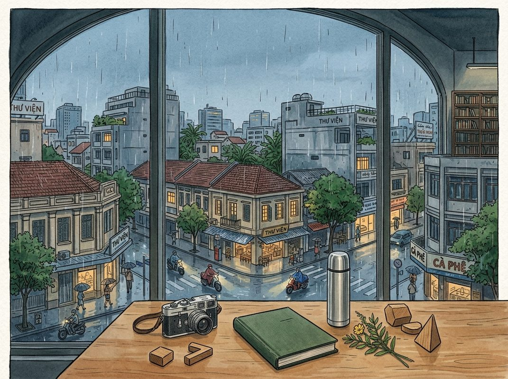

9/3

今日更新
153. 和曾鸣聊产业史观：残酷的真相、会消亡的公司、优秀≠卓越、“OAI、Anth大概率不是原生时代大赢家”
来源：张小珺Jùn｜商业访谈录
原链接：https://www.xiaoyuzhoufm.com/episode/6a97f287f03e74ee6b03ea5b?utm_source=rss
状态：已读部分音频 transcript
这期播客是企业战略专家曾鸣教授对AI新范式的深度解读，他结合互联网发展史和自身在阿里巴巴的实战经验，提出了对公司生死存亡、战略决策本质以及AI产业发展阶段的独到见解，尤其适合对未来商业趋势、企业战略和技术演进有深入思考的创业者、企业家和投资者。
- 曾鸣的独特视角与残酷真相：曾鸣教授以其在阿里巴巴集团前总参谋长的实战经验，以及对互联网周期和产业史的深刻研究，形成了其独特的战略思考。他开篇即抛出“公司会消亡”、“巨浪面前无人安全”等颠覆性观点，指出“车臣式管理”的公司制度终将衰落。他强调，从历史来看，一个时代的领军企业极少能成功过渡并主导下一个时代，这并非绝望，反而为新公司和年轻人创造了无限机会。这种理论与实践相结合、并持续关注前沿产业发展的能力，使他的战略洞察对众多企业家产生了深远影响。
- 阿里生死存亡的战略抉择：反共识方能卓越：曾鸣教授复盘了阿里巴巴前15年影响其生死存亡的三个关键战略决定：创办淘宝、支付宝和阿里云。这些决策在当时都面临巨大的内部争议和社会不认可，但最终被证明是奠定阿里基石的“反共识”之举。他指出，战略并非简单的规划，而是创造未来，真正的“卓越”往往源于反共识的判断，而非在共识领域做到极致的“优秀”。此外，战略的落地是一个多层次、充满挑战的过程，从宏观决策到微观执行，每一步都至关重要，例如阿里云从服务单一场景到多场景架构的演变，以及“去IOE”的艰巨实践。
- 颠覆性技术的三阶段演进模型：曾鸣教授通过对历次工业革命和互联网周期的系统研究，提炼出颠覆性通用技术发展的三个普遍阶段：首先是技术被社会接受并成为基础设施；其次是基于基础设施涌现出海量应用，呈现百花齐放的局面；最后，当海量应用出现后，人们发现需要更底层的运行方法，从而进入“原生应用”阶段。他以移动互联网为例，从早期的黑莓手机到iPhone及App Store，再到抖音、快手等原生应用的崛起，清晰地阐释了这一演进路径。
- AI时代：基础设施成熟，智能体浪潮初启：曾鸣教授判断，AI产业化已基本完成第一阶段，即技术成为基础设施。其标志性事件是“Token”在2024年初形成广泛共识，成为衡量AI服务和成本的标准单位，如同“一度电”般易于规模化使用。同时，2024年春节前后“Open Cloud（龙虾）”现象的爆发，预示着AI已迈入第二阶段的开端——“智能体”时代。智能体代表了AI时代的新应用形态，其核心在于封装和分享“能力”，而非仅仅是信息。
- 从信息时代到能力时代：等待AI的“浏览器”与“雅虎”：曾鸣教授将AI的当前发展类比为互联网的早期阶段，指出我们正从“信息时代”迈向“能力时代”。他回忆互联网早期“建网站”分享信息的狂热，以及随后“浏览器”统一标准、极大降低创造和浏览门槛，最终催生雅虎（信息目录）和谷歌（搜索）的历程。他认为，AI时代的“智能体”爆发，如同当年的网站大爆发，而我们目前正处于等待“智能体浏览器”出现的阶段。这个“浏览器”将统一智能体的标准，并让用户能以极简方式调用智能体，这将是未来两年最令人兴奋的巨大机会。
South Africa Sessions: Staring Down Death Twice in One Week ft. Khaya Dlanga
来源：What now with Trevor Noah
状态：已读完整音频 transcript
这期播客通过幽默的开场和深入的对话，揭示了南非社会，特别是其司法系统和普遍腐败的复杂现实，并与美国情况进行了对比。它适合对比较法律体系、发展中国家治理挑战以及独特文化视角感兴趣的中文读者。
- 开场白：南非的日常幽默与独特的“拍手礼”：播客以一系列轻松幽默的南非日常轶事开场，展现了当地独特的文化视角。例如，一位母亲对朋友精心策划并排练自己葬礼的“控制欲”感到震惊；主持人特雷弗·诺亚（Trevor Noah）分享了自己因非正规小巴司机操作不当，导致车辆翻滚，险些丧命的惊险经历，以此讽刺非正规商业的风险。随后，嘉宾卡亚·德兰加（Khaya Dlanga）介绍了南非特有的“拍手礼”（clap one），这种单次拍手手势在当地文化中常用于表达对某事荒谬或令人难以置信的反应，与美国文化中拍手表示赞同的习惯形成鲜明对比，引发了关于文化语境差异的有趣讨论。
- 问责制的困境：美南非司法体系的对比与反思：对话深入探讨了问责制在不同司法体系中的实践。特雷弗·诺亚指出，在美国，国会听证会（如针对大银行或社交媒体巨头）往往沦为“表演式问责”，缺乏实际的法律后果，被指控者很少真正受到惩罚。他认为这是一种“没有问责后果的问责表演”。而卡亚·德兰加则强调，南非的调查委员会（如祖多委员会）“有牙齿”，即具备实际的执行力。他举例说，南非曾有一名官员因不同案件被捕七次，每次逮捕都有新闻媒体在场，甚至形成了一种“流程”，被捕者会带着午餐盒，警察也穿着特定制服，这与美国的情况形成了鲜明对比，暗示南非的问责机制至少在形式上更具震慑力。
- 国家腐败的深渊：祖多委员会的报告与国家检察机关的失职：播客的核心讨论聚焦于南非严重的国家腐败问题。祖多委员会（Zondo Commission）的调查报告揭露了“国家劫持”（state capture）的广泛存在，即国家机构被私人利益集团渗透和操控。该委员会提出了大量起诉建议，但国家检察机关（National Prosecuting Authority, NPA）却未能有效执行这些建议。卡亚指出，尽管祖多委员会提供了详尽的报告和建议，但由于缺乏起诉意愿，许多案件最终不了了之。他提到前总统雅各布·祖马（Jacob Zuma）曾因藐视法庭被捕，而非因“国家劫持”指控，这进一步凸显了问责机制在实际操作中的困境和政治阻力。
- 腐败的触角：从警局到司法系统，再到贩毒集团的渗透：对话揭示了南非腐败的深度和广度。姆赫瓦纳齐（Mkhwanazi）的证词令人震惊，他指出腐败不仅存在于警察系统内部，还蔓延至其上级、下属，甚至包括法官、律师等司法链条上的各个环节。他甚至开玩笑说“我的妻子也腐败”，以此强调腐败的无孔不入。负责调查警察不当行为的独立警察调查局（IDAC）在深入调查后发现，国家检察机关内部存在不予起诉的共谋行为，导致许多“国家劫持”案件无法推进。更令人担忧的是，南非的腐败网络已与国际贩毒集团勾结，毒品在国内外自由流通，这表明腐败已超越政府层面，对国家安全和社会秩序构成了严重威胁。
- 沉默的权利：南非与美国的宪法差异及其适用条件：播客还对比了南非与美国在“沉默权”方面的宪法规定。特雷弗·诺亚提到美国的第五修正案（Fifth Amendment），赋予公民在刑事案件中拒绝自证其罪的权利。卡亚·德兰加则解释说，南非宪法中的第35条修正案（35th Amendment）也包含类似权利，但其适用条件更为具体和有限。在南非，公民只有在被捕时才拥有保持沉默的权利，以避免在警方审讯中无意中提供不利于自己的证词。而在法庭上，如果存在刑事案件指控，被告可以援引不自证其罪的权利。这种差异意味着南非的“沉默权”并非像美国那样广泛适用于所有情况，而是与特定的法律程序阶段紧密相关。
Essentials: Use Sleep to Enhance Learning, Memory & Emotional State | Dr. Gina Poe
来源：Huberman Lab
状态：已读完整音频 transcript
这期播客深入探讨了睡眠的科学奥秘，揭示了不同睡眠阶段在学习、记忆巩固、创造力提升和情绪调节中的关键作用，是任何希望通过优化睡眠来提升认知功能、情绪健康和整体表现的人士的必听内容。
- 睡眠的奥秘：不同阶段及其功能：睡眠并非单一状态，而是由非快速眼动睡眠（NREM）和快速眼动睡眠（REM）两大主要阶段组成，两者化学性质截然不同。NREM又细分为N1（入睡期）、N2（浅睡期）和N3（慢波深睡期）。一个完美的睡眠周期约90分钟，每晚经历4-5个周期，总时长约7.5-8小时。N1和N2阶段常伴有短暂的幻觉式梦境，而N3阶段则以大脑中巨大的慢波活动为特征，对身体恢复至关重要。REM睡眠则以活跃的、叙事性梦境和眼球快速运动为标志。
- 早期睡眠：记忆巩固与身体修复的关键：夜间的前几个睡眠周期，特别是N3慢波深睡期，对记忆处理和身体恢复至关重要。此时，大脑会进行“清洗”工作，清除白天积累的错误折叠蛋白质，并大量释放生长激素，促进蛋白质合成，为记忆编码提供“突触空间”。N2期的“睡眠纺锤波”是丘脑与皮层之间沟通的桥梁，负责将海马体（大脑的“内存”）中的新信息写入皮层（“硬盘”），实现记忆的初步巩固。酒精会抑制REM睡眠和N2期的睡眠纺锤波，严重影响这一关键的记忆转移过程。
- 后期睡眠：创造力与信息整合的温床：随着夜晚的深入，REM睡眠的比例逐渐增加，其持续时间也更长。这一阶段被认为是产生最多创造力的时期。在REM睡眠中，大脑能够将旧有和新的信息以独特的方式重新组合，构建新的认知图式（schema），从而激发洞察力和创新思维。此时，大脑就像一台电脑，打开不同的文件夹，比较文档，寻找关联，并强化那些可能带来新颖和独特理解的连接。
- 蓝斑核与去甲肾上腺素：遗忘与学习的平衡：蓝斑核（Locus Coeruleus, LC）是大脑中富含去甲肾上腺素（即肾上腺素的脑内版本）的区域，负责警觉、注意力转换和应激反应，帮助我们快速学习新事物。然而，在REM睡眠期间，蓝斑核会完全“关闭”，停止释放去甲肾上腺素。这种“沉默”对于清除不再有用或错误的突触至关重要，它能“擦除”大脑中负责新奇编码的“U盘”，为新的学习腾出空间。如果蓝斑核未能有效关闭，大脑的“内存”就会被填满，难以继续学习新知识，甚至可能导致创伤记忆的持续活跃。
- 睡眠与情绪调节：治愈创伤的机制：REM睡眠中蓝斑核的关闭，对于处理创伤记忆具有深远意义。尽管REM睡眠期间情绪系统高度活跃，但去甲肾上腺素的缺失，使得大脑能够将高度激活的情绪与记忆的认知部分“分离”。这意味着我们可以记住创伤事件，甚至记得当时的情绪反应，但不会在每次回忆时都“重演”那种生理和情感上的痛苦。如果蓝斑核在REM睡眠期间持续活跃，去甲肾上腺素水平过高，则可能导致创伤情绪被反复强化，使创伤后应激障碍（PTSD）患者难以摆脱痛苦的循环。
Andrew Huberman: My Exact Routine To Optimize Brain & Body, I Do All Of These Every Day!
来源：Diary of a CEO
原链接：
状态：已读部分音频 transcript
这期播客提供了一套基于神经科学的、实用且低成本的日常健康优化方案，尤其适合希望通过科学方法提升身心健康、专注力和表现的普通大众。
- 核心理念：优化皮质醇曲线与昼夜节律：Andrew Huberman强调，健康的核心在于优化身体的昼夜节律和皮质醇（压力荷尔蒙）曲线。大多数人误以为皮质醇越低越好，但实际上，早晨皮质醇的“觉醒反应”越高越好。早晨皮质醇的峰值能显著提升情绪、专注力、注意力和学习能力，并为下午和夜间的低皮质醇水平奠定基础，这对于高质量的睡眠至关重要。相反，早晨皮质醇水平过低或平坦，会导致白天的压力反应更强烈、持续时间更长，并扰乱夜间褪黑素的分泌，进而影响睡眠。这些协议并非孤立存在，而是相互协同，像齿轮一样紧密配合，共同构成一个更健康的生理系统。
- 清晨启动：补水与阳光的强大力量：Huberman提出的第一个协议是**补水**：醒来后立即饮用16到32盎司（约470-940毫升）的清水，有助于提升早晨皮质醇，并通过迷走神经激活大脑，使思维更敏锐。全天建议摄入约80盎司水。第二个协议是**接触阳光**：在醒来后的30-60分钟内，务必让眼睛接触自然光（或10,000勒克斯人造光）。阳光激活视网膜细胞，向大脑主生物钟发送信号，启动觉醒过程，有效提升早晨皮质醇峰值。这能增强免疫、改善代谢、提升情绪和学习能力，并为夜间良好睡眠打下基础。即使阴天，户外光线也远强于室内。不应隔着窗户进行。早晨和傍晚阳光紫外线指数较低，风险小。
- 全光谱光线：皮肤与视力的深层益处：皮肤接触阳光同样重要。适量紫外线B暴露能增加睾酮和雌激素，对性欲和亲密关系有益。阳光中的长波长（红光和红外光）能穿透皮肤，优化线粒体功能，显著改善葡萄糖代谢，并促进细胞内褪黑素作为抗氧化剂释放。此外，40岁以上人群在每天前三小时内，每周数次短时间观看长波长光，能改善与年龄相关的视力下降，因视网膜感光细胞需其保护。自然阳光提供全光谱平衡光线，置身绿色植物中还能受益于反射的长波长红外光。
- 运动：早间锻炼的生理优势：第三个协议是**运动**：理想情况下，在醒来后的三到四小时内进行心血管或力量训练，能带来巨大优势。Huberman建议每周进行三天力量训练和三天心血管训练，休息一天。力量训练应侧重复合运动（如引体向上、划船、深蹲、硬拉），每项练习2-3组，接近力竭。心血管训练包括：一天长时间低强度（约1小时），一天中等强度（约30分钟），一天短时高强度间歇训练（如30秒全力冲刺，10秒休息）。早晨运动会引起皮质醇的显著升高，这正是身体在白天所需的高皮质醇峰值。长期在固定时间锻炼，能训练大脑预期运动的到来，从而在运动开始时提供更多能量和动力。
- 应对压力与韧性：冷暴露与大脑可塑性：**冷暴露的真相：** 刻意冷暴露（如冷水浴）不会显著提高皮质醇，但会大幅提升肾上腺素、去甲肾上腺素和多巴胺，增强警觉性和专注力。在冷水中保持镇定，能训练身体在肾上腺素飙升时保持冷静，这种能力可迁移到应对其他压力情境。**前扣带回中区（AMCC）：** 这是大脑中与“坚韧不拔”相关的区域。当我们面对挑战并决定迎难而上时，AMCC会活跃。它具有高度可塑性，通过成功减肥、新锻炼或做不情愿但有益的事，能使其变得更大、更活跃，从而增强未来应对挑战的能力。
历史精选
The Mark Zuckerberg Interview
来源：Acquired
原链接：https://www.acquired.fm/episodes/the-mark-zuckerberg-interview
状态：已读网页 transcript
这期Acquired播客对马克·扎克伯格的深度访谈，揭示了Meta作为一家科技巨头，在面对无数生存挑战时，如何通过技术自主、快速迭代、长期主义以及创始人坚定的愿景，不断重新定义自身并穿越周期。它适合所有对科技公司战略、创始人领导力、以及如何在大变局中保持竞争优势感兴趣的听众。
- 学习与苦难：定义Meta的价值观：扎克伯格以其衬衫上印着的希腊语“pathemathos”（通过苦难学习）开场，这不仅是他的家族格言，也深刻反映了Meta和其创始人走过的道路。他认同英伟达CEO黄仁勋的观点，即创业之旅充满痛苦，许多人若预知其艰辛可能不会开始。然而，正是这些反复的挑战和艰难的权衡，才真正塑造了一个人的价值观和公司的核心。扎克伯格强调，公司的价值观并非写在墙上的口号，而是通过实际行动和面对困境时的选择所体现的。这种“通过苦难学习”的哲学，贯穿了Meta从初创到成为全球巨头的整个过程，使其在无数次危机中得以成长和蜕变。
- Meta的本质：从社交应用到未来连接平台：扎克伯格明确指出，Meta从未将自己定义为一家“社交媒体公司”或“社交应用公司”，而是致力于“人类连接的未来”。他认为，当前的手机屏幕限制了理想的社交体验，而AR眼镜才是实现未来连接的终极平台。理想的AR眼镜不仅能作为AI助手，理解用户所见所闻，还能将全息影像投射到现实世界，实现身临其境的社交互动。Meta为此投入了十年研发，面临显示技术、小型化、芯片、电池等巨大挑战。他将Ray-Ban智能眼镜视为通往终极AR的“练习项目”，并意外地发现其与AI的结合潜力，这再次印证了Meta对“连接”这一核心使命的执着，以及对下一代计算平台的战略布局。
- 技术驱动与快速迭代：Meta的制胜DNA：面对MySpace、Twitter、Instagram、Snapchat、WhatsApp、TikTok、苹果ATT以及ChatGPT等九大“生存威胁”，Meta之所以能持续成功，扎克伯格归因于其强大的技术基础和快速迭代的学习文化。他强调，Meta是一家真正的技术公司，管理团队中技术背景的人占多数，董事会也重视技术决策。公司产品策略并非一蹴而就，而是通过快速发布、收集反馈、不断学习和改进。他将Meta的开发模式比作“回合制策略游戏”，通过比竞争对手获得更多“回合”和从每个回合中学习更多来取胜。这种文化甚至鼓励在产品尚未完全成熟时就发布，以获取真实用户反馈，尽管这可能意味着短期内会受到批评，但长远来看能更快地找到产品与市场的契合点。
- 开放生态与战略自主：避免平台依赖：扎克伯格承认Meta是开源技术（如LAMP栈）的巨大受益者，但其对开源的拥抱并非出于狂热，而是战略考量。他以Open Compute为例，指出通过开源硬件设计，Meta将内部技术转化为行业标准，从而降低成本、提高供应链效率。在AI领域，Llama模型的开源也遵循类似逻辑：Meta需要领先的AI模型，但不想完全依赖外部平台。鉴于过去在移动平台（如苹果）上受到的限制，Meta深知掌握核心技术平台的重要性。开源Llama不仅能促进生态系统发展，也能确保Meta在AI时代拥有战略自主权，避免重蹈在移动时代受制于人的覆辙。
- 痛苦的转型与政治误判：两次重大教训：扎克伯格回顾了公司历史上的两次重大“错误”。第一次是2012年IPO前夕，Facebook在移动端坚持HTML5策略，导致用户体验不佳和股价腰斩。他承认这是技术判断失误，但当时公司明确知道需要做什么——暂停功能开发，彻底重写原生应用。虽然痛苦，但一年半后公司重回正轨。第二次是2016年后的政治环境误判，他认为这是“20年的错误”。公司在政治危机中过度承担责任，被指责为社会问题替罪羊，导致品牌受损。他反思应更坚定地划清界限，区分公司责任与政治归咎，并强调未来将通过支持独立学术研究来应对不实指控，这显示了他在处理公共关系上的深刻反思和策略调整。
Mercado Libre: E-commerce Empire - [Business Breakdowns, EP.227]
来源：Business Breakdowns
原链接：https://joincolossus.com/episode/mercado-libre-e-commerce-empire/
状态：已读网页 transcript
本期播客深入剖析了Mercado Libre如何从一个拉丁美洲的eBay模仿者，蜕变为一个市值千亿的电商与金融科技巨头，尤其适合对新兴市场商业模式创新、平台生态系统构建及金融普惠挑战感兴趣的投资者和商业分析师。
- 从模仿者到区域霸主：Mercado Libre的早期演进：Mercado Libre（简称Meli）的故事始于约15年前，最初被视为拉丁美洲的eBay。然而，它并未止步于此，而是深刻理解并适应了拉美市场的独特需求。在创始人及其团队的带领下，Meli通过IPO获得了发展资金，并逐步超越了简单的C2C模式。拉美地区高度分散的市场、薄弱的物流基础设施以及较低的银行和信用卡普及率，为Meli提供了巨大的发展机遇。它不仅是一个交易平台，更致力于解决这些基础性痛点，为后续的指数级增长奠定了基石，最终市值达到eBay的三倍，成为区域内不可撼动的电商帝国。
- 电商核心业务的深度拓展与战略取舍：Meli的电商业务从最初的在线市场，逐步演变为一个类似亚马逊的综合性平台。其核心策略是优先考虑市场份额和用户体验，而非短期利润。为了解决拉美地区普遍存在的物流难题，Meli大力投入建设自己的物流网络Mercado Envios，提供仓储和配送服务，极大地提升了履约效率。尽管免费送货等策略一度挤压了利润空间，但此举有效提升了用户粘性，扩大了市场覆盖。此外，Meli还通过Meli Plus会员计划提供增值服务，并积极发展站内广告业务，为未来的增长开辟了新的收入来源，展现了其强大的生态系统构建能力。
- 金融科技支柱：Mercado Pago的崛起：Mercado Pago是Meli成功的另一个关键引擎，其诞生源于解决电商交易中的支付痛点。在信用卡普及率低的拉美，Meli意识到需要一个更包容、更便捷的支付解决方案。Mercado Pago最初作为Meli电商平台的支付网关，随后迅速扩展为独立的金融科技服务，覆盖线上和线下支付。它不仅为消费者提供了多种支付选项，也为中小商户提供了收款工具，有效弥补了传统银行服务的不足，推动了金融普惠。这一战略性布局，使得Meli能够深度绑定用户和商户，形成强大的网络效应。
- 信贷业务：高风险市场中的精准赋能：在Mercado Pago的基础上，Meli进一步拓展了信贷业务，向消费者和中小商户提供贷款。这在传统金融机构服务不足的拉美市场具有巨大潜力，但也伴随着高风险。Meli通过其电商和支付平台积累的海量交易数据，构建了独特的信用评估模型，能够更精准地识别和管理风险。这种数据驱动的风险管理能力，使其能够在高风险环境中有效运营信贷业务，为缺乏传统信用记录的用户提供资金支持，进一步巩固了其生态系统的粘性，并创造了新的盈利增长点。
- 财务表现与再投资策略：增长优先的长期主义：尽管Meli在物流和免费送货等方面的投入一度导致运营利润率承压，但公司始终坚持将市场主导地位置于短期利润之上。这种增长优先的再投资策略，使其能够持续扩大用户基础、提升服务质量，并不断拓展新的业务领域。播客中提到，Meli的财务表现反映了其强大的增长动力，而其对物流、金融科技和信贷等基础设施的持续投入，正是其构建深厚护城河的关键。这种长期主义的战略眼光，是Meli能够持续保持竞争优势并实现巨大价值创造的重要原因。